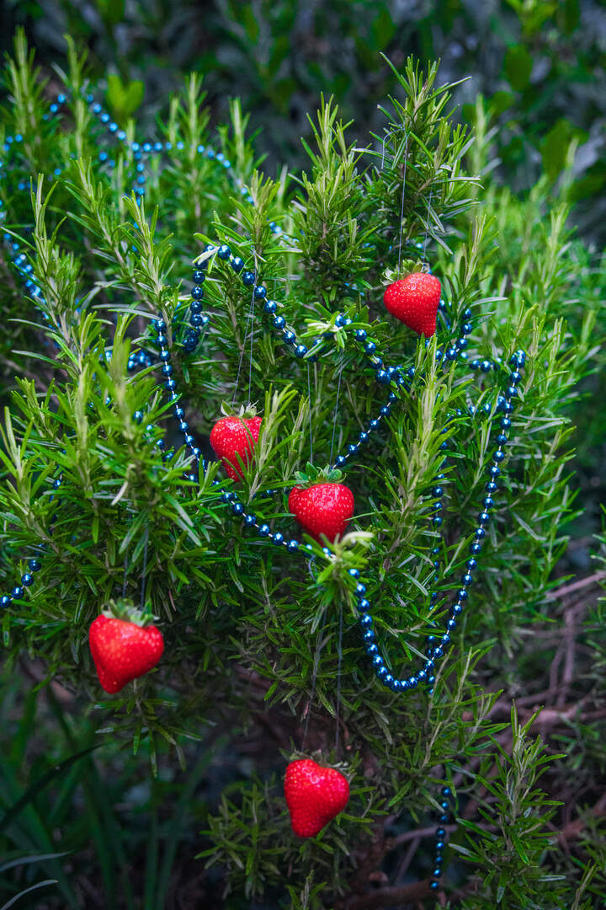
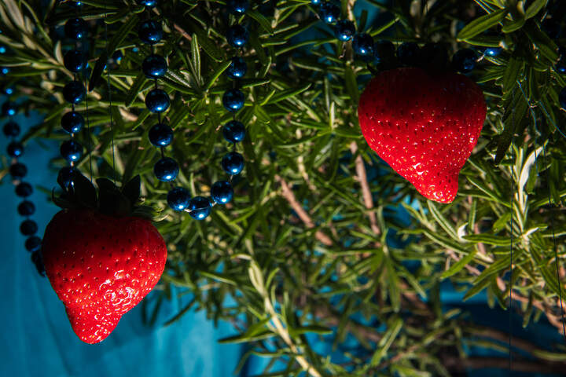

© Kaat Pype
Het prijsverschil
Belgische aardbeien rechtstreeks van het veld kosten dubbel zoveel als een bakje in de supermarkt: hoe komt dat toch?
Soms kost een bakje Belgische aardbeien minder dan 3 euro, soms bijna 10 euro. Wat gaat er schuil achter de prijsverschillen van het populaire zomerfruit?
1 juli 2026 om 10:00
Dit is hét moment voor aardbeien: dankzij de zonnige dagen zijn ze nu het goedkoopst. Toch lopen de prijzen voor Belgische aardbeien soms flink uiteen — fruit uit de korte keten kost al snel het dubbele van een bakje uit de supermarkt. Hoe kunnen twee vruchten die in hetzelfde land aan een gelijkaardige plant groeien zo verschillend geprijsd zijn?
Aldi
Veldwinkel
Kempengoud
In omliggende winkels komt er nog een marge voor de winkel zelf bij, online moet je rekening houden met een servicekost
*Prijzen genoteerd op 22 juni
Substraat in plaats van aarde
We beginnen bij de boerderij. De meeste supermarktaardbeien groeien niet in volle grond, maar op verhoogde installaties met substraat in serres. De investering in zo'n serre is fors, maar daarna is de teelt uiterst efficiënt: de omstandigheden zijn er veel beter te controleren en de opbrengst ligt een stuk hoger.
Op de biologische boerderij Kempengoud in Essen gaat het anders. Boer Gijs Van den Bleeken werkt verplicht in de grond, mag amper bestrijdingsmiddelen of kunstmest gebruiken en haalt daardoor een veel kleinere oogst van dezelfde oppervlakte. De keuze voor bio brengt bovendien extra kosten met zich mee.
Met de hand geplukt
Of ze nu uit de serre of van het veld komen: aardbeien blijven arbeidsintensief. Elke plant vraagt verzorging en elke vrucht wordt met de hand geplukt en gesorteerd. Bij een kleine bioboerderij weegt die loonkost per kilo zwaarder door dan bij grote telers die met ervaren seizoenarbeiders aan hoog tempo oogsten.

Ook inbegrepen in de prijs van je bakje: plantgoed, verpakking en transport. Minder tussenschakels betekent daarbij niet automatisch een lagere prijs. Kosten die een coöperatie of supermarktketen over duizenden tonnen kan spreiden, moet een kleine producent met een hoevewinkel grotendeels zelf dragen. "Onze klanten hechten minder belang aan vorm, maar komen voor de smaak", zegt Van den Bleeken over de eenvoudige kartonnen doosjes zonder Europese kwaliteitsklasse.
Het hele jaar rond
Steeds meer telers laten hun dure serres het hele jaar renderen, ook al lopen de energiekosten in de koude maanden hoog op. In volle zomer speelt vooral vraag en aanbod: bij een groot aanbod zakken de prijzen op de veilingen. Supermarkten zetten de rode vruchten bovendien geregeld in promotie, zeker rond Moederdag.
Kempengoud houdt zijn prijs liever het hele seizoen stabiel, en ook Aldi zegt de consumentenprijs zo vlak mogelijk te houden. En de bioboer die zijn eigen verkoop regelt? Die schat dat hij na alle kosten en lonen zo'n 4 euro per kilogram overhoudt. "In een goed seizoen brengen aardbeien iets op."
LEES OOK
Fout gezien? Meld het ons hier
Samenvatting van het artikel van Eva Kestemont, De Standaard, 1 juli 2026 (Het Prijsverschil).